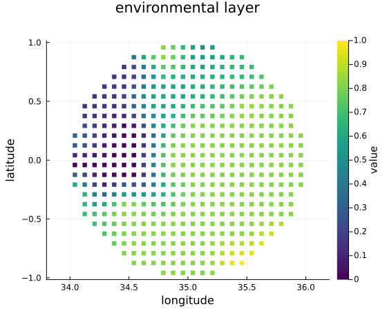
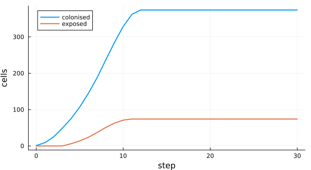
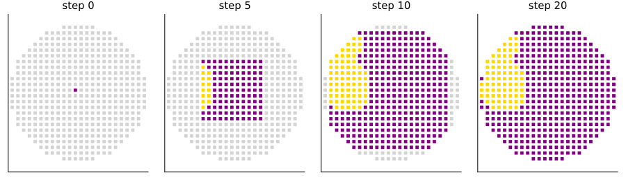

Dispersal of biological control agents
Simon Frost
- Overview
- The grid and the neighbourhood
- A release
- How fast it arrives
- Matching the released code
- Deviations from the source
Overview
When a parasitoid or predator is released against a crop pest, where will it be in a year? iPyDisp (Agboka et al. 2024) is a desktop tool that answers with a cellular automaton on a map:
- the region is cut into a grid of cells about a kilometre or more across;
- a released agent reaches every cell within its travel distance in one time step;
- a cell it reaches is colonised if its environment suits the agent (each layer, such as temperature or rainfall, lies within bounds), and only exposed if not;
- exposed cells pass the agent on as well.
This implementation is a reproduction of the tool’s released code. The model is deterministic, and on the same grid, constraints and release sites every cell’s state at every step equals that of the tool’s own functions.
ENV["GKSwstype"] = "100"
using EcologicalCellularAutomata
using CellularAutomataCore
using PlotsThe grid and the neighbourhood
iPyDisp lays a grid of square cells, cellsize × 0.00833 degrees across (about cellsize km at the equator), over the region’s bounding box, keeps the cells inside the region, and joins two cells when their centroids are closer than the travel distance on a sphere of radius 6371 km. With cells of about 9.3 km and a travel distance of 15 km, each cell’s neighbours are its eight surrounding cells; with 20 km, cells two away in a straight line join too.
ex = ipydisp_example()
g = ex.grid
[(travel=d, most_neighbours=maximum(length, ipydisp_neighbours(g.lat, g.lon, d)))
for d in (10, 15, 20, 30)]4-element Vector{@NamedTuple{travel::Int64, most_neighbours::Int64}}:
(travel = 10, most_neighbours = 4)
(travel = 15, most_neighbours = 8)
(travel = 20, most_neighbours = 12)
(travel = 30, most_neighbours = 36)The example region is an ellipse in central Kenya with one synthetic environmental layer: cells are suitable when it exceeds 0.3.
suitable = ipydisp_suitable(ex.constraints, length(g.lat))
scatter(g.lon, g.lat; zcolor=ex.constraints[1][1], markershape=:square, markersize=3.2,
markerstrokewidth=0, c=:viridis, aspect_ratio=1, label=false,
xlabel="longitude", ylabel="latitude", title="environmental layer",
colorbar_title="value", size=(560, 480))
A release
One release at the centre, followed for 30 steps (months, say).
prob = problem(:ipydisp_dispersal; steps=30)
sol = solve(prob; saveat=1)
counts = ipydisp_counts.(sol.u)
plot(0:30, [getfield.(counts, :colonised) getfield.(counts, :exposed)];
label=["colonised" "exposed"], lw=2, xlabel="step", ylabel="cells", size=(620, 340))
colours = [:lightgray, :gold, :purple]
plot([scatter(g.lon, g.lat; color=colours[sol.u[t + 1].status .+ 1], markershape=:square,
markersize=2.4, markerstrokewidth=0, aspect_ratio=1, label=false,
title="step $t", titlefontsize=10, ticks=false)
for t in (0, 5, 10, 20)]...; layout=(1, 4), size=(900, 260))
Colonised cells are purple, exposed ones yellow. The front advances one cell a step in every direction, through unsuitable cells as well as suitable ones, since exposed cells pass the agent on. So unsuitable patches do not slow the spread; they only stay uncolonised.
How fast it arrives
iPyDisp’s validation compares the step at which a known site is first reached with the time the agent was found there. Without constraints, with cells joined to their eight neighbours, the step at which a cell is reached is its Chebyshev distance in cells from the release.
plain = problem(:ipydisp_dispersal; constraints=[], steps=40)
reached = fill(-1, length(g.lat))
let integ = init(plain)
reached[integ.u.status .== 2] .= 0
for t in 1:40
step!(integ)
reached[(reached .< 0) .& (integ.u.status .== 2)] .= t
end
end
s = findfirst(==(0), reached)
cheb = [max(abs(g.row[k] - g.row[s]), abs(g.col[k] - g.col[s])) for k in eachindex(reached)]
(all_reached=all(>=(0), reached), equals_chebyshev_distance=reached == cheb)(all_reached = true, equals_chebyshev_distance = true)With a longer travel distance the front moves faster. With 20 km, cells two away in a straight line join, but cells two away on a diagonal do not, so the front covers the region in fewer steps.
fast = problem(:ipydisp_dispersal; grid=g, neighbours=ipydisp_neighbours(g.lat, g.lon, 20),
constraints=[], steps=40)
function steps_to_all(prob)
integ = init(prob)
t = 0
while any(==(0), integ.u.status)
step!(integ)
t += 1
end
return t
end
(travel_15km=steps_to_all(plain), travel_20km=steps_to_all(fast))(travel_15km = 12, travel_20km = 9)Matching the released code
The tool is a desktop application, but its model is three functions and two loops: the distance, the neighbourhood of the exposed and colonised cells, the constraint test, the building of the neighbourhood and the update. Run headless in Python on the same grids, with travel distances of 7.5, 12 and 15 km, two constraint layers and several release sites, they give exactly the neighbourhoods and the states of every cell at every step that this model gives, for 25 to 40 steps. The grid built from a bounding box is the same as well. One difference remains. The tool clips cells at the edge of the region’s polygon and places them at the centroid of their part inside. Here a cell is kept or dropped whole.
Deviations from the source
foreach(d -> println("- ", d), model_info(:ipydisp_dispersal).deviations)- Written from the released Python code (MIT licence, github.com/Vansnoden/iPyDisp, also SoftwareImpacts/SIMPAC-2023-462); the paper's text was not available.
- Cells are kept where a predicate holds at the centroid of their square; iPyDisp clips the grid to a shapefile and places cut cells at the centroid of their part inside it. With a grid exported from iPyDisp the runs are identical.
- Constraint layers are vectors of values per cell; iPyDisp reads them from GeoTIFFs at the cell centroids, clamping out-of-range indices to the last row or column.
- The example setting (an ellipse in central Kenya with one synthetic constraint) is synthetic; the software ships with no data.Agboka, Komi Mensah, John Odindi, Elfatih M. Abdel-Rahman, Onisimo Mutanga, and Henri E. Z. Tonnang. 2024. “A Visual and Spatial Tool for Tracking, Mapping and Forecasting the Dispersal of Biological Control Agents.” Software Impacts 19: 100609. https://doi.org/10.1016/j.simpa.2023.100609.